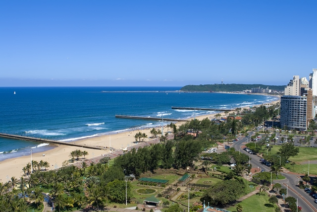
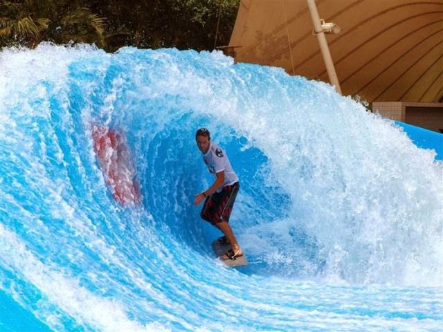
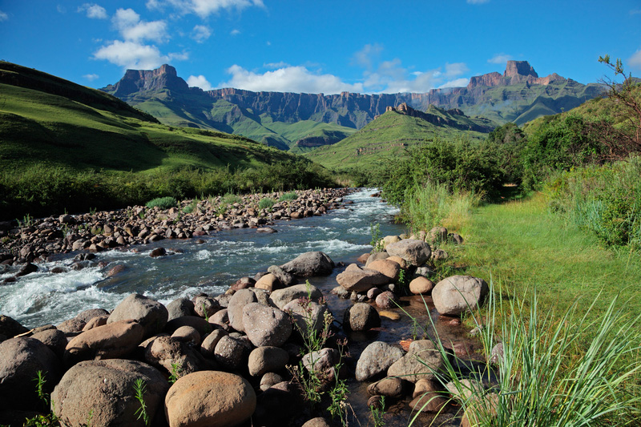

This province combines the traditions of the Zulus with the modern
elements of modern time. Kwazulu Natal is also known as the "Zulu Kingdom".
Main attractions are the Elephant Coast, South and North Coast, Drakensberg,
Golden Mile, Moses Mabhida Stadium, and the Gateway Theatre of Shopping.
And many other attractions.
  Above are images of The Golden Mile beachfront, with warm water year round
and famous surfing beaches.The Gateway Theatre Of Shopping, and the Majestic
Drakensberg.